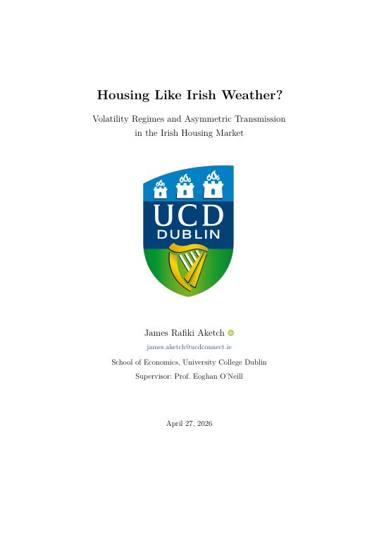
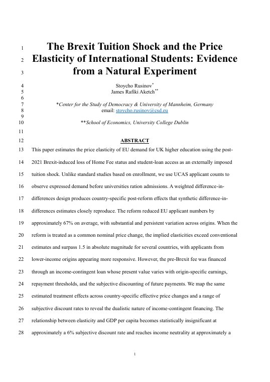

Irish housing regimes
Does demand feed through to Irish housing differently in calm and stressed times? Regimes are identified from the demand side and estimated under the 𝔍𝔄 prior.
Economics and mathematics student at UCD in Dublin. I model housing markets, take photographs, and I'm building a systematic investment firm.
I'm in my final year at UCD, and I'm interested in how markets shift between regimes.
My thesis uses a Bayesian Markov-switching model to study the Irish housing market, and I'm co-authoring a paper on how the Brexit tuition shock changed EU demand for UK universities.
Outside research I shoot photographs and build Angular Momentum Capital, a systematic investment firm that trades on paper for now.
My undergraduate thesis and a co-authored paper.

Does demand feed through to Irish housing differently in calm and stressed times? Regimes are identified from the demand side and estimated under the 𝔍𝔄 prior.

What happened to EU applications to UK universities once Brexit took away home-fee status and student loans?
Hover or tap any skill to see where I've actually used it.
Eleven years as an NCSE-supported braillist. That's my name in standard six-dot braille. Hover or tap the cells to read it.
Played for Lansdowne Rugby Club from 2019 to 2022, as the first legally congenitally blind Rugby Union player in the Republic of Ireland.
I shoot as @jaketchphoto, mostly on a Fujifilm. A selection lives on the photography page, and I take bookings for portraits, events and editorial work.
On the media and PR team at UCD's African Society this year.
Degree, school and certificates.
A systematic investment firm I'm building, paper-trading for now. Rules-based strategies, tested properly and run without guesswork.
Ask about AmCFor research collaboration, photography enquiries, or anything about AmC, send me an email and I'll reply as soon as I can.
It's --:-- in Dublin right now.